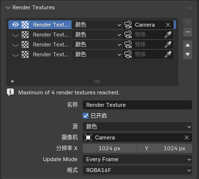
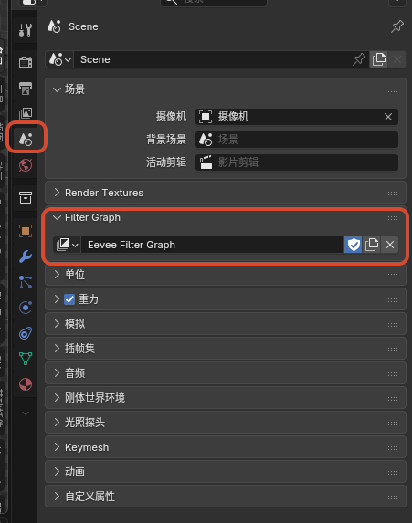
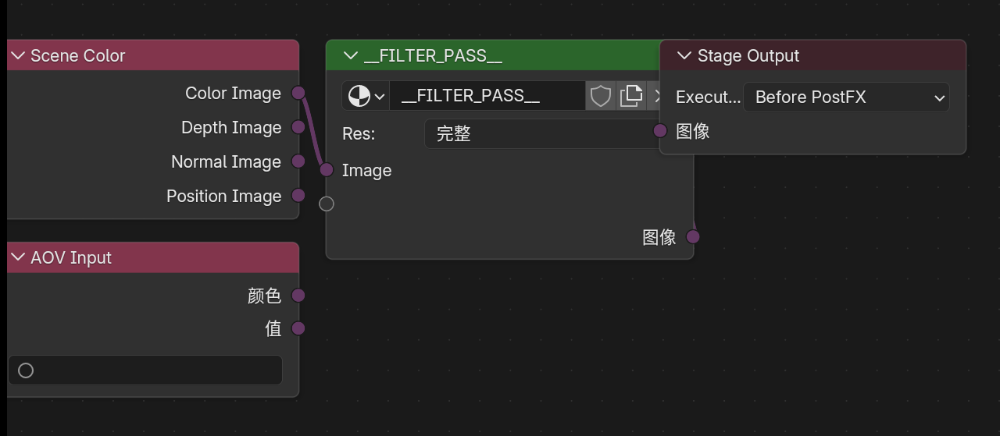
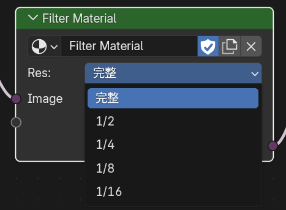
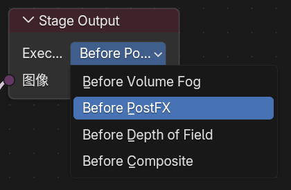
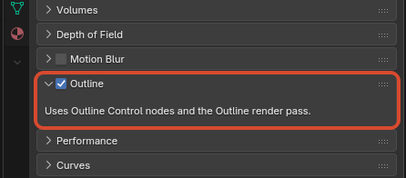

Scene 级 Eevee 扩展¶
1. Render Textures¶
功能说明¶
Render Textures 是场景级的 Eevee 额外渲染纹理系统。
它允许场景预先维护最多 4 个 Render Texture 槽位。每个槽位都可以指定一个相机和一个输出类型，把该相机视角下的场景结果先渲染成纹理，再在普通物体材质中通过 Render Texture 节点采样。
面板入口¶
Scene Properties > Render Textures

可配置内容¶
每个 Render Texture 条目当前支持：
NameEnabledSourceColor：捕获最终 Eevee 颜色Depth：捕获线性深度Normal：捕获法线CameraResolution X / YUpdate ModeEvery SampleEvery FrameManualFormatRGBA16FRGBA32FR16FR32F
基本使用方法¶
- 打开
Scene Properties > Render Textures。 - 新建一个
Render Texture条目。 - 选择
Source、Camera、分辨率、刷新模式和格式。 - 在普通物体材质里添加
Add > Texture > Render Texture节点。 - 在节点面板中选择对应的
Render Texture条目。 - 使用节点输出的
Color/Alpha参与后续材质计算。
2. Filter Graph¶
功能说明¶
Filter Graph 是场景级的 Eevee 全屏滤镜执行图，用节点连接代替旧版按列表顺序执行的线性 Filter Materials。场景通过 Scene.eevee.filter_graph 指定唯一的权威图数据块，图中的图像句柄可以连接到多个 Filter Pass，并在不同渲染阶段输出结果。
面板与编辑器入口¶
- 在
Scene Properties > Filter Graph新建或指定场景使用的 Filter Graph。 - 把任意区域的编辑器类型切换为
Eevee Filter Graph，即可编辑当前场景指定的图。 Filter Pass使用的材质仍是Filter域材质；进入该材质后，可在 Shader Editor 中编辑内部节点树。

在 Scene Properties 中指定当前场景使用的 Eevee Filter Graph
Filter Graph 节点¶
Scene Color：提供当前阶段的Color Image、Depth Image、Normal Image和Position Image图像句柄。AOV Input：按名称读取 View Layer AOV，提供Color和Value图像句柄。Filter Pass：执行一个Filter域材质。输入接口同步自材质的Pass Input，输出接口同步自材质的Filter Output。Stage Output：把连接的图像写回所选渲染阶段。每个阶段只能有一个 activeStage Output。

Scene Color、AOV Input、Filter Pass 与 Stage Output 的完整连接示例
Filter 材质内部结构¶
新建 Filter Pass 材质时会生成这条默认链路：
Pass Input -> Image Sample -> Filter Output
Pass Input 接收 Filter Graph 传入的图像句柄，Image Sample 在当前像素或偏移位置采样，Filter Output 把结果返回给图中的 Filter Pass。可按需要在 Pass Input 与 Filter Output 上维护动态接口；单个 Filter Pass 最多支持 32 个输入和 32 个输出。

Pass Input、Image Sample、Filter Output 组成的材质链及其视口效果
基本使用方法¶
- 打开
Scene Properties > Filter Graph，新建或指定一个图。 - 切换到
Eevee Filter Graph编辑器。 - 用
Scene Color或AOV Input提供源图像，并连接到Filter Pass。 - 在
Filter Pass上新建或指定 Filter 材质，再进入材质内部编辑实际滤镜逻辑。 - 把
Filter Pass的结果连接到Stage Output，选择执行阶段并确保该输出处于 active 状态。 - 按性能和效果需要，为每个
Filter Pass选择Full、1/2、1/4、1/8或1/16执行分辨率。

Filter Pass 支持的执行分辨率
执行阶段¶
Before Volume FogBefore PostFXBefore Depth of FieldBefore Composite

Stage Output 的四个执行阶段
同一阶段即使放置多个 Stage Output，也只会使用其中一个 active 输出；其他阶段可以各自维护独立的 active 输出链路。
数据块与旧文件迁移¶
- 从面板新建的 Filter Graph 和从
Filter Pass新建的 Filter 材质都会自动启用 fake user；暂时从场景或节点解除关联不会让数据块在保存时立即丢失。 - 打开使用 5.1 线性 Filter Materials 列表的旧文件时，条目会自动迁移为等价的 Filter Graph，并按原执行阶段和顺序生成连接。
- Filter 材质中仍可使用
Filter Object Info、Filter Mask、GLSL Function等 Filter 域节点；场景缓冲和 AOV 的图级路由应优先在 Filter Graph 中完成。
3. Native Camera FX Outputs¶
功能说明¶
Native Camera FX Outputs 是 View Layer 级的 Eevee 原生后期输出系统。它可以把指定的渲染通道抽出后，单独套用 Eevee 的 Motion Blur 和 / 或 Depth of Field，再以新的 Render Pass 输出。
这适合为描边、AOV、深度、法线、光照分量等通道生成带相机运动模糊或景深的版本，用于合成器、后续滤镜或外部后期流程。
面板入口¶
View Layer Properties > Passes > Native Camera FX Outputs

为指定 Render Pass 单独应用运动模糊与景深
可配置内容¶
每个输出条目支持：
Name：生成的 Render Pass 名称Enabled：是否生成该输出Source：要处理的来源通道Shader AOV：当Source为Shader AOV时选择具体 AOV 名称Motion Blur：套用 Eevee 原生运动模糊Depth of Field：套用 Eevee 原生景深
Source 支持项¶
DepthNormalPositionVectorDiffuse LightDiffuse ColorSpecular LightSpecular ColorVolume LightEmissionEnvironmentShadowAmbient OcclusionTransparentShader AOVOutline
基本使用方法¶
- 切换到
Eevee渲染引擎。 - 打开
View Layer Properties > Passes > Native Camera FX Outputs。 - 新建一个输出条目。
- 设置
Name和Source。 - 按需要启用
Motion Blur、Depth of Field，或同时启用两者。 - 在合成器或后续流程中读取同名 Render Pass。
重要说明¶
Motion Blur仍需要场景 / View Layer 中启用 Eevee 运动模糊Depth of Field仍使用当前相机的景深设置Shader AOV来源必须选择 View Layer 中已经存在的 AOV 名称- 如果条目出现无效状态，通常是名称冲突、来源 AOV 不存在，或超过当前可用输出数量
- 描边通道可作为
Outline来源输出，并可单独获得带景深或运动模糊的版本
4. Eevee Outline¶
功能说明¶
Eevee Outline 是场景级描边总开关，用于控制当前 NPR Port 内置的屏幕空间描边系统。
面板入口¶
Render Properties > Outline
描边 Render Pass 入口：
View Layer Properties > Passes > Data > Outline
行为说明¶
- 默认开启，保持
Outline Control节点和OutlineRender Pass 的正常行为 - 关闭后，
Outline Control节点不会影响 Combined 渲染结果 - 关闭后，即使 View Layer 中启用了
OutlineRender Pass，也不会输出描边内容 - 该开关用于快速回到与未启用描边系统时一致的 Eevee 渲染结果
- 当
OutlineRender Pass 未开启时，描边结果会直接合成进Combined - 当
OutlineRender Pass 开启时，可在合成器或后续流程中单独读取描边结果 - 该功能依赖材质中的
Outline Control节点实际写入描边参数；没有节点输出时不会自动生成描边 - 位于 Holdout 集合中的物体不会继续写出
Outline Control参数，也不会贡献 Freestyle / marked-edge 描边种子 - 渲染方式为
Blended的前景材质会参与后方描边遮挡：完全不透明时遮挡后方描边，完全透明时不影响后方描边 - 半透明
Blended前景会按材质透射率衰减后方描边强度，不会用前景材质颜色染色后方描边

Render Properties 中的全局 Outline 开关

View Layer Properties > Passes > Data 中的 Outline Render Pass